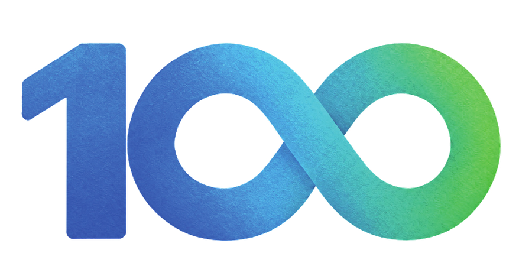
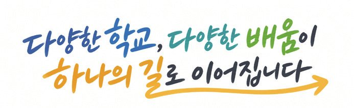
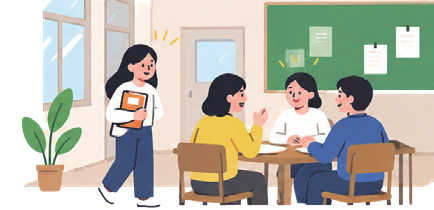
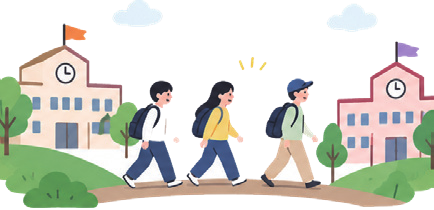
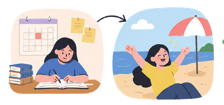
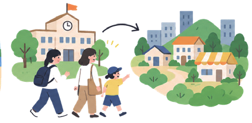
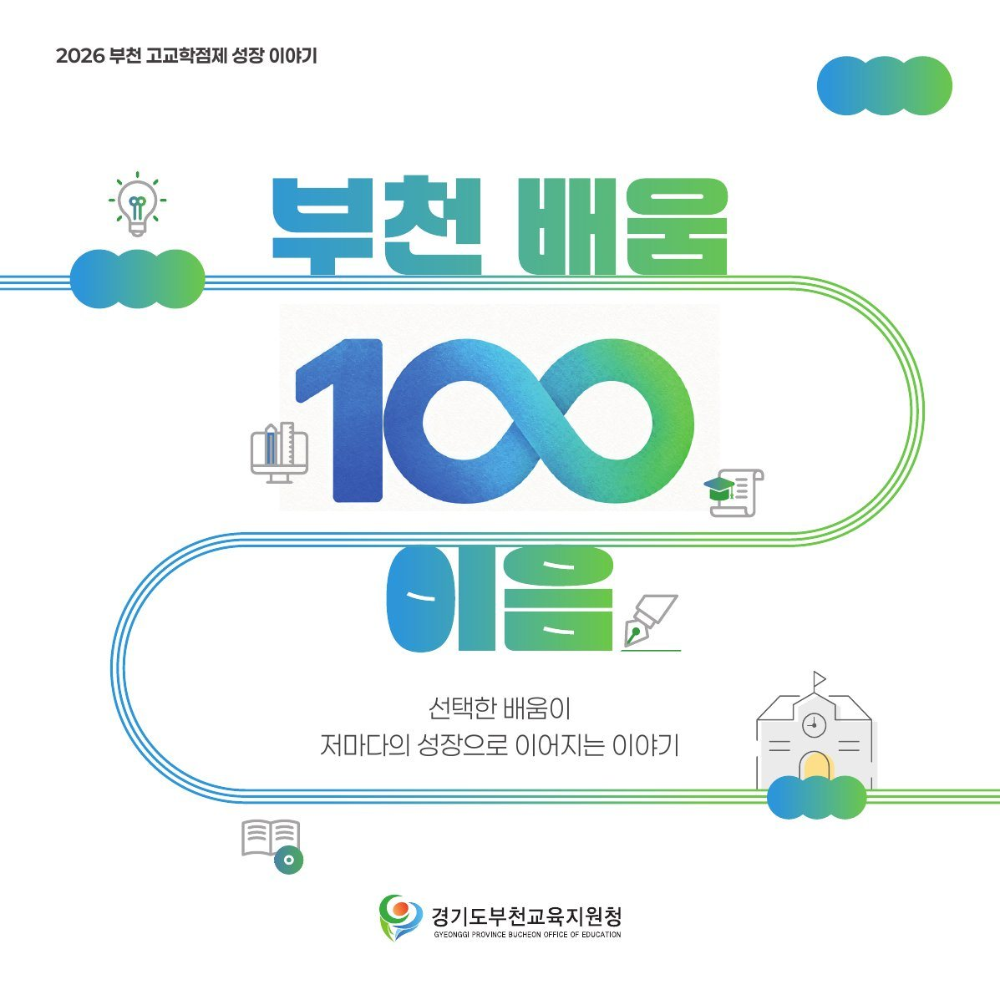
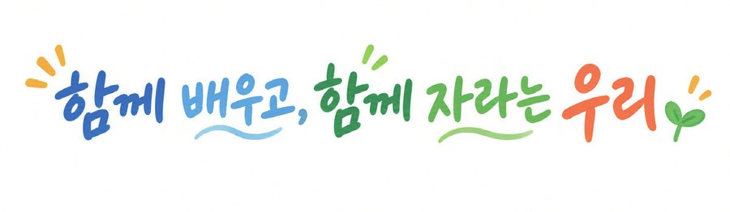
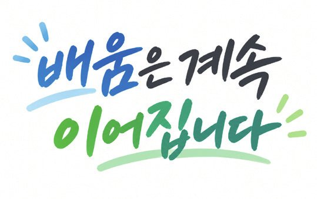

부천 배움

이음선택한 배움이 저마다의 성장으로 이어지는 이야기
부천은 학생의 배움이 학교 안에 머물지 않도록 학교와 학교를 잇고, 학기에서 방학으로 배움의 시간을 넓히며, 대학과 지역의 교육 자원을 연결해 왔습니다. 그 과정에서 만들어진 학생과 교사의 이야기를 담았습니다.
touch_app 친구들을 눌러 보세요. 성장의 한마디가 들려요
선택이 닿는 곳까지, 배움의 길을 넓히다
학생의 선택에서 출발해 학교 안에서 학교 밖으로, 학기에서 방학으로, 지역으로 배움의 공간과 시간을 넓혀 왔습니다.

-

01학교 안에서
교육과정 특성화 · 다양한 선택과목 · 진로·학업 설계
29개 고등학교일반고·자율고 24 · 특목고 1 · 특성화고 4 -

02학교와 학교를 이어
공동교육과정
47강좌 · 727명2026 정규학기 강좌 수 · 참여 학생 -

03학기에서 방학까지
공동교육과정 계절학기
14강좌 · 3강좌2025 겨울방학 · 2026 여름방학 -

04학교에서 지역으로
대학·지역 연계 · 나눔캠퍼스 · 창의융합 공유학교
5개 대학나눔캠퍼스 참여 대학
29개 학교, 29개의 빛깔
부천의 29개 고등학교는 저마다의 강점을 살린 교육과정으로 학생의 선택과 배움의 폭을 넓혀 가고 있습니다.
교과특성화·중점 교육과정
예술 전문 교육
산업 맞춤 직업 교육
교과특성화학교(운영 과목)중점학교 등 교육과정 특성화특수목적고특성화고
※ 교과특성화학교: 지정 후 3년 운영 · 학교별 자세한 교육활동은 고등학교 교육활동 모아보기(e북)에서 볼 수 있습니다.
나에게 맞는 배움의 길은?
세 가지 질문에 답하면 나에게 어울리는 부천의 배움 길을 알려 드려요.
책자 보기
펼침면 단위로 넘겨 볼 수 있습니다. 이미지를 누르면 크게 볼 수 있습니다.

배움에서 성장으로
새로운 배움에 도전한 학생과, 학생의 선택을 존중하며 새 수업을 만든 교사의 이야기입니다.
“다른 학교 친구들과 함께 배우며, 새로운 생각과 경험을 나눌 수 있었어요.”
“학생들이 한 걸음씩 나아가는 모습을 보며, 저도 함께 성장했어요.”
서로 다른 선택, 저마다의 성장
100개의 배움이 이어져 100개의 성장이 됩니다. 학교 안에서, 학교를 넘어, 방학까지 이어진 배움의 목소리입니다.

기록으로 만나는 부천의 배움
학교와 지역이 함께 만든 부천의 교육 이야기가 언론을 통해 전해졌습니다.
자료

한 학생의 선택에서 시작한 배움은 서로 다른 성장으로 이어지고,
그 성장이 부천의 내일을 만듭니다.